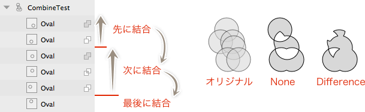

Sketch.app Advent Calender 2013 18日目の記事です。
Sketch.app Advent Calender 18日目の記事です。今回はパスの結合についてです。Photoshopではシェイプの結合、Illustratorではパスファインダー、Fireworksではパスの結合などとしてお馴染みのアレです。
Sketchの基本。というSketch（Sketch 3）の基本操作にフォーカスした電子書籍をリリースしました。詳しくはこちらの「Sketchの基本。」のページをご覧ください。
この記事はSketch 2を元にした記事です。最新版の動作とは異なる可能性が高いため、参考程度にご覧ください。
結合について
他のアプリでもある機能ですが、複数のパスを結合し「1つの」オブジェクトを生成する機能です。Sketch.appでは、IllustratorのOptionキーを押しながら結合した時と同じように、再編集が可能で結合方法も後から自由に変更ができます。
結合したいパスを選択し、［Edit］→［Combine］またはツールバーの中から結合方法を選択します。
Union
パス全体を連結します。ショートカットは、Command＋Option＋Uです。
Subtract
背面のパスを前面のパスで型抜きします。ショートカットは、Command＋Option＋Sです。
Intersect
パスが交差していない部分を残します。ショートカットは、Command＋Option＋Iです。
Difference
Intersectとは逆に、背面と前面のパスが交差する部分を残します。ショートカットは、Command＋Option＋Xです。
Reset
結合したパスを作成する場合はグレーアウトしていますが、結合後のパスの一部を選択することで適用できる様になります。これを選択した場合は、結合の演算がそこで一旦リセットされます（後述）。
結合されるとレイヤーリストの左端に三角マークがでるので、それを展開して個別に編集できます。また、パス名の右にあるマークから結合方法の変更もできます。
メニューやツールバー以外からやる場合は、レイヤーリストで元となるパスに結合したいパスをドラッグで重ね、リストに枠が出たら離します。同じ方法で、他のパスを追加することもできます。
結合の順番について
結合の演算は基本的に下から上に向かって行われますが、メニューから「Reset」またはレイヤーリストから選択できる「None」を適用した場合は順番が変わります。「None」を指定したパスから上の結合を先に行った上で、下のパスに対して「Difference」をしているようです。「None」から上でグループ化されると考えれば、わかりやすいでしょうか。

結合したパスを1つのパスに変換する
結合したパスを1つのパスに変換する場合は、［Edit］→［Paths］にある「Flatten」を選択するか、ツールバーのアイコンをクリックします。
結合を解除する
結合を解除するには、［Edit］→［Split］を選ぶか、ツールバーのアイコンをクリックします。